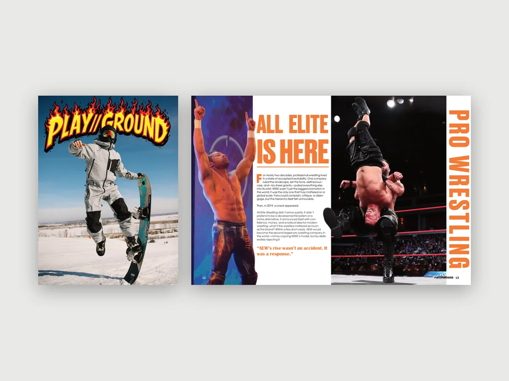
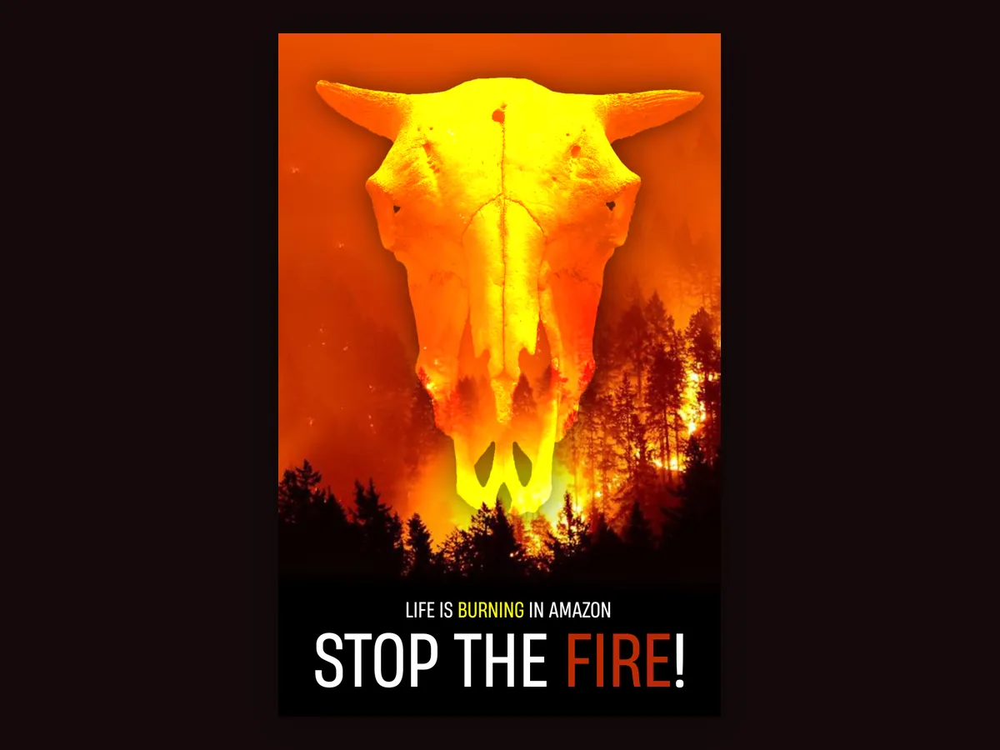
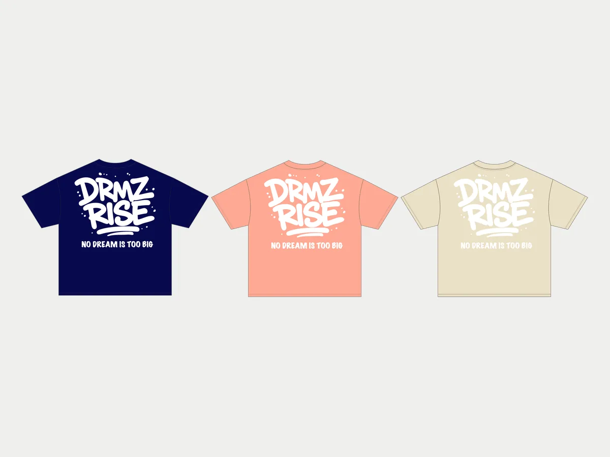
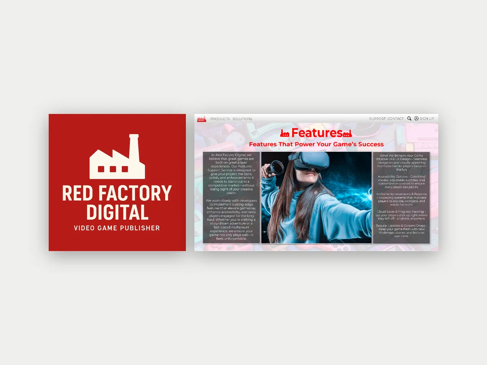
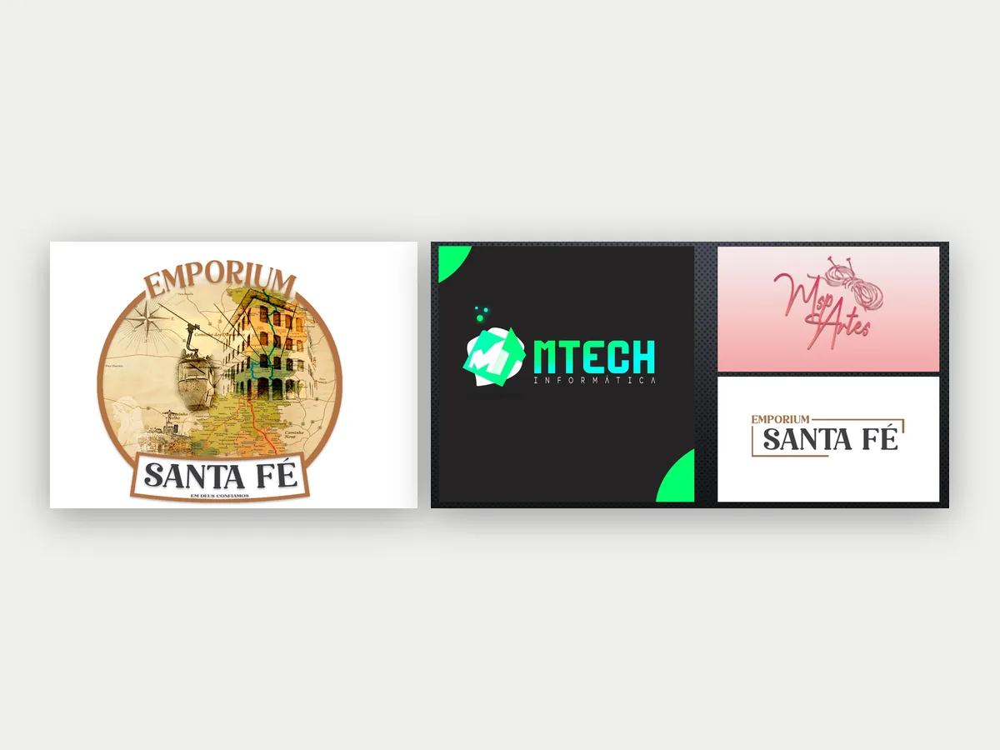

I design editorial, branding and packaging with a bias for strong typography and clear hierarchy.
Mateus Oliveira · Graphic Designer · Toronto, ON

Play//Ground Magazine A 17-page independent magazine about action sports and culture, from snowboarding and surf to rally, wrestling and MMA.

Monster Tonic A concept that reimagines an energy drink as an artisan apothecary tonic.

Information Design Two studies in making complex information clear: a personal data visualization and the redesign of a game's back cover.

Toronto Blue Jays Fan Guide A six-page interactive fan guide to Toronto's baseball team, built to be read on screen.

Walking Together A 12-page brochure on the Laidlaw Foundation's Truth and Reconciliation work, produced in digital and print-ready versions.

Personal Brand Identity A monogram, colour system and stationery for my own practice as a graphic designer.

BrazilFest 2025 Poster, ticket and display graphics for Toronto's International BrazilFest, built around a carnival mask and feather motif.

Stop the Fire A photo-composite awareness poster about wildfires in the Amazon.

DRMZ Rise A graffiti-style wordmark and tagline for an independent streetwear label.

Royal Navy Museums Rebrand A logo redesign concept for Royal Navy Museums in three colour directions.

Red Factory Digital A brand and website prototype for a fictional video game publisher that helps indie developers reach global audiences.

Early Client Work Logos, a food mascot and YouTube channel banners made for small businesses and creators in Brazil.